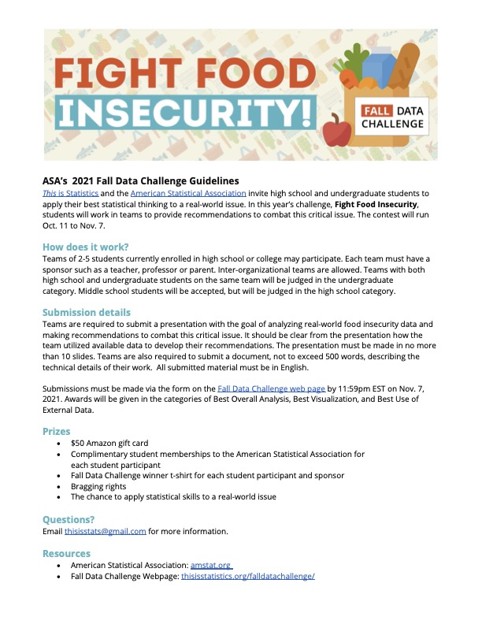

New_DSI_quartoblog
About
News and Events
Categories
All
(9)
analysis
(1)
learning
(1)
machine-learning
(1)
mathematics
(1)
research
(1)
statistics
(1)
tutorial
(1)
Research Statistician vacancies at the Bureau of Labor Statistics
statistics
mathematics
research
This is a cross-post from a recent Project-DAFANH “Ask me anything” career speaker.
Nov 27, 2022
Dr. D
Exploring Tech Justice: The Just Data Lab
As part of the…
Nov 27, 2022
Math 485 Student
Fooling Facial Recognition
machine-learning
Most people have seen deep fakes and AI generated images online but people often don’t know the…
Oct 27, 2022
Brandon Trahams
September Student post: Introduction to SQL
tutorial
This is a quick-and-dirty introduction that will explain what SQL is, how it is used, and what some SQL queries look like in R using the dplyr package. SQL…
Sep 1, 2022
Joseph Shifman
August Student post: Underlying geometry of data
analysis
We start our student contributed guest post series with a look at data from a topological lens. Skip Moses…
Aug 1, 2022
Skip Moses
Fall 22 Guest post series
learning
Last Spring 2022 our most recent cohort of Data Science certificate students took the Advanced Data Science course…
Jul 17, 2022
Dr. D
Chico State Data Fest 2022 Recap
On April 1-3rd, Chico State University hosted the ASA DataFest 2022. DataFest is an event hosted by the Chico State Data Initiative (DSI), organized by Doctor Robin…
Apr 4, 2022
Faith F.
New grant program supports Hispanic students in Data Science enabled USDA career paths.
CHICO, Calif.- California State University, Chico and California State…
Mar 1, 2022
Faith F.

Using Data to Fight Food Insecurity
The Fall Data Challenge (https://thisisstatistics.org/falldatachallenge/) starts next Monday on October 11th. This is a GREAT opportunity for students to
Oct 5, 2021
Dr. D.
No matching items